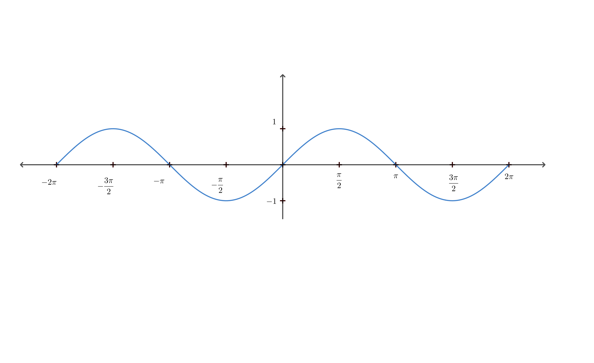
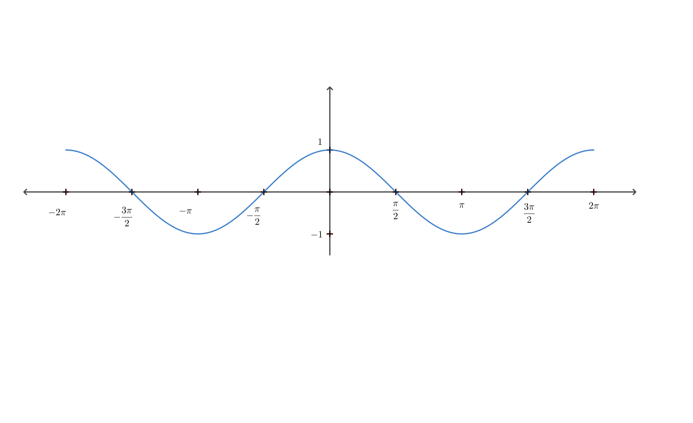
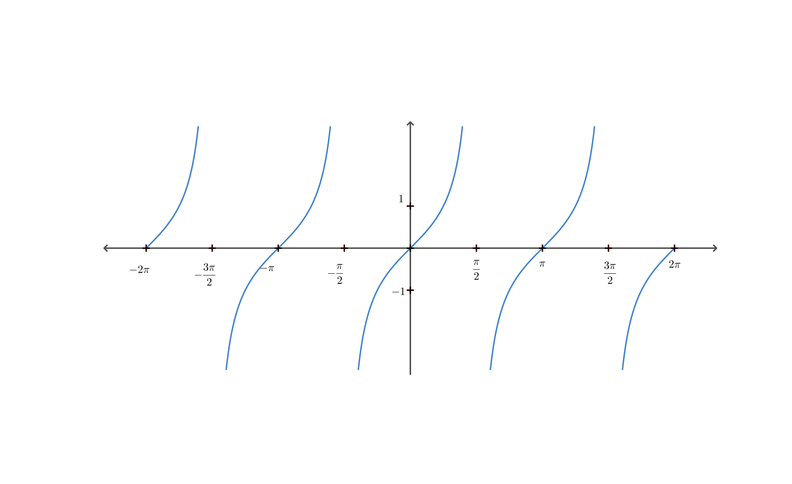

1 พื้นฐานและวงกลมหนึ่งหน่วย (Basics & Unit Circle)
อัตราส่วนตรีโกณมิติ
| ฟังก์ชัน | อัตราส่วน | ส่วนกลับ |
|---|---|---|
| $\sin \theta$ | ข้าม / ฉาก | $\csc \theta = 1/\sin \theta$ |
| $\cos \theta$ | ชิด / ฉาก | $\sec \theta = 1/\cos \theta$ |
| $\tan \theta$ | ข้าม / ชิด | $\cot \theta = 1/\tan \theta$ |
วงกลมหนึ่งหน่วย (ASTC)
พิกัด $(x, y) = (\cos \theta, \sin \theta)$
- Q1 (All): ทุกค่าเป็นบวก
- Q2 (Sin): เฉพาะ $\sin, \csc$ เป็นบวก
- Q3 (Tan): เฉพาะ $\tan, \cot$ เป็นบวก
- Q4 (Cos): เฉพาะ $\cos, \sec$ เป็นบวก
2 เอกลักษณ์พื้นฐาน (Fundamental Identities)
Pythagorean Identities
$\sin^2 \theta + \cos^2 \theta = 1$
- $1 + \tan^2 \theta = \sec^2 \theta$
- $1 + \cot^2 \theta = \csc^2 \theta$
Quotient Identities
$\tan \theta = \dfrac{\sin \theta}{\cos \theta}$
$\cot \theta = \dfrac{\cos \theta}{\sin \theta}$
3 สูตรมุมต่างๆ (Compound & Multiple Angles)
ผลบวกและผลต่างมุม
Sine (ไซน์-คอส, คอส-ไซน์)
$\sin(A \pm B) = \sin A \cos B \pm \cos A \sin B$
Cosine (คอส-คอส, ไซน์-ไซน์)
$\cos(A \pm B) = \cos A \cos B \mp \sin A \sin B$
Tangent
$\tan(A \pm B) = \dfrac{\tan A \pm \tan B}{1 \mp \tan A \tan B}$
มุมสองเท่า ($2A$)
$\sin 2A$
$2 \sin A \cos A$
$\dfrac{2 \tan A}{1 + \tan^2 A}$
$\dfrac{2 \tan A}{1 + \tan^2 A}$
$\cos 2A$
$\cos^2 A - \sin^2 A$
$2\cos^2 A - 1$
$1 - 2\sin^2 A$
$2\cos^2 A - 1$
$1 - 2\sin^2 A$
$\tan 2A$
$\dfrac{2 \tan A}{1 - \tan^2 A}$
$\dfrac{2 \tan A}{1 - \tan^2 A}$
มุมสามเท่า ($3A$):
$\sin 3A = 3\sin A - 4\sin^3 A$ |
$\cos 3A = 4\cos^3 A - 3\cos A$
4 การแปลงผลคูณ/ผลบวก (Product & Sum Conversions)
ผลคูณ $\rightarrow$ ผลบวก/ลบ
| $2 \sin A \cos B$ | $=$ | $\sin(A+B) + \sin(A-B)$ |
| $2 \cos A \sin B$ | $=$ | $\sin(A+B) - \sin(A-B)$ |
| $2 \cos A \cos B$ | $=$ | $\cos(A+B) + \cos(A-B)$ |
| $-2 \sin A \sin B$ | $=$ | $\cos(A+B) - \cos(A-B)$ |
ผลบวก/ลบ $\rightarrow$ ผลคูณ
| $\sin A + \sin B$ | $=$ | $2 \sin(\frac{A+B}{2}) \cos(\frac{A-B}{2})$ |
| $\sin A - \sin B$ | $=$ | $2 \cos(\frac{A+B}{2}) \sin(\frac{A-B}{2})$ |
| $\cos A + \cos B$ | $=$ | $2 \cos(\frac{A+B}{2}) \cos(\frac{A-B}{2})$ |
| $\cos A - \cos B$ | $=$ | $-2 \sin(\frac{A+B}{2}) \sin(\frac{A-B}{2})$ |
5 สามเหลี่ยมและอินเวอร์ส (Triangle Laws & Inverse)
กฎของสามเหลี่ยม
กฎของไซน์ (Sine Law)
$\dfrac{a}{\sin A} = \dfrac{b}{\sin B} = \dfrac{c}{\sin C}$
กฎของโคไซน์ (Cosine Law)
$a^2 = b^2 + c^2 - 2bc \cos A$
$b^2 = a^2 + c^2 - 2ac \cos B$
$c^2 = a^2 + b^2 - 2ab \cos C$
$b^2 = a^2 + c^2 - 2ac \cos B$
$c^2 = a^2 + b^2 - 2ab \cos C$
พื้นที่สามเหลี่ยม = $\dfrac{1}{2} ab \sin C$
ฟังก์ชันตรีโกณมิติผกผัน (Inverse)
| ฟังก์ชัน ($y$) | โดเมน ($x$) | เรนจ์ (มุม) | Quadrant |
|---|---|---|---|
| $\arcsin x$ | $[-1, 1]$ | $[-\frac{\pi}{2}, \frac{\pi}{2}]$ | Q1, Q4 |
| $\arccos x$ | $[-1, 1]$ | $[0, \pi]$ | Q1, Q2 |
| $\arctan x$ | $\mathbb{R}$ | $(-\frac{\pi}{2}, \frac{\pi}{2})$ | Q1, Q4 |
ข้อควรระวัง: $\arccos(-x) = \pi - \arccos x$
6 กราฟของฟังก์ชันตรีโกณมิติ (Graphs of Trigonometric Functions)
รูปทั่วไป $y = a \sin(bx)$ หรือ $y = a \cos(bx)$
แอมพลิจูด (Amplitude): $|a|$
คาบ (Period): $\dfrac{2\pi}{|b|}$ (สำหรับ sin, cos) หรือ $\dfrac{\pi}{|b|}$ (สำหรับ tan)
$y = \sin x$
คาบ: $2\pi$
แอมพลิจูด: $1$
โดเมน: $\mathbb{R}$ | เรนจ์: $[-1, 1]$
$y = \cos x$
คาบ: $2\pi$
แอมพลิจูด: $1$
โดเมน: $\mathbb{R}$ | เรนจ์: $[-1, 1]$
$y = \tan x$
คาบ: $\pi$
แอมพลิจูด: หาค่าไม่ได้
โดเมน: $\mathbb{R} - \{n\pi + \frac{\pi}{2} : n \in \mathbb{Z}\}$ | เรนจ์: $\mathbb{R}$